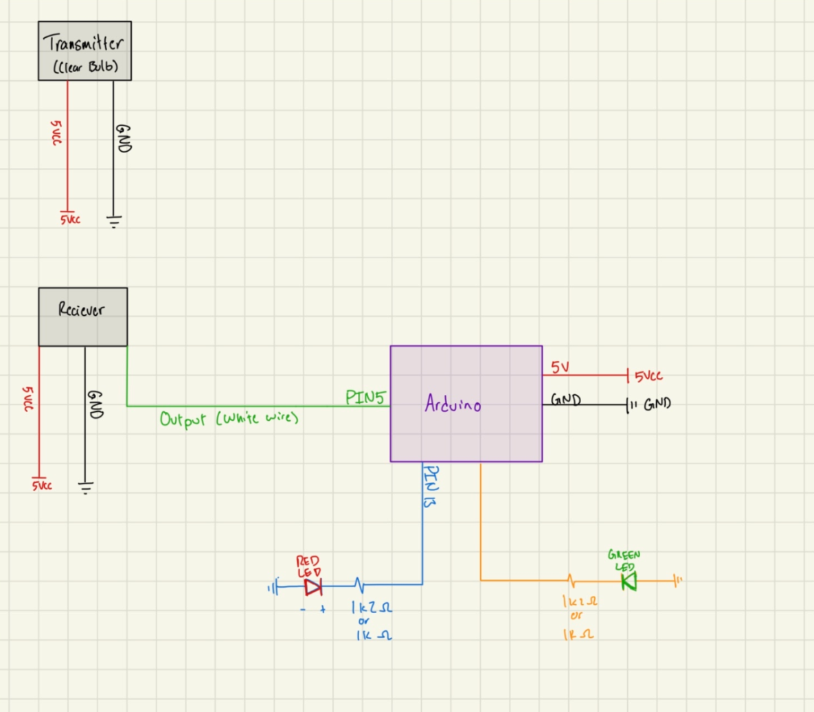
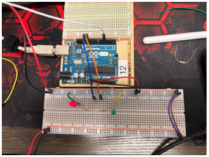
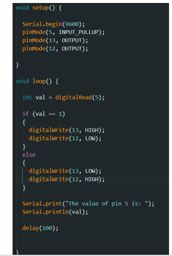

Dometic · Co-Op · Early-Stage Prototype
Digital Lock Box
A concept and early Arduino prototype for a visible lockout/tagout lock box, meant to replace a key-based safety interlock on a robotic work cell with something leadership could actually see from across the floor.

Overview
A robotic arm works inside a caged work cell. Right now, the safety interlock runs on a key: an operator hits "request to enter," the machine shuts down, and pulling a key from the control panel is what keeps it locked out until that key goes back in. It works, but it has two problems. Functionally, the request-to-enter logic doesn't cleanly separate manual mode from the key requirement the way it should. And from a safety standpoint, someone above my supervisor wants visible lockout/tagout locks instead of a key hidden in a panel — something anyone walking by can see is locked. My idea was a box that holds those physical locks directly and feeds their presence back to the machine's control panel, so the visible lock becomes the interlock instead of a hidden key switch.
The scope I was given was to design the electronics, the base logic, and the physical box — the actual integration into the machine's control panel would be someone else's job down the line. I only got as far as an early-stage proof of concept before my term ended: an Arduino standing in for the eventual PLC, break-beam sensors standing in for lock detection, and a breadboard prototype showing the core logic working. It's a starting point for whoever picks it up next, not a finished system.
Design & Prototype
From Concept to Breadboard
An early-stage build — the logic worked out on paper, then proven on a breadboard before any PLC or integration work began.
The Logic Behind the Box
In its resting state, the box holds no locks and shows red — the cage door should stay closed. Opening the door starts with "request to enter," same as today. From there, an operator places a physical lock in the box; once the box detects it, the machine locks out completely; manual mode goes away entirely. I built in a 15–20 second window for the operator to actually place the lock before the door commits to locking, sized to hold up to four locks so more than one person can be locked out at once. When the last lock is removed, the machine stays deliberately non-functional for 20 seconds before resetting and coming back online — a buffer to let the system recalibrate and confirm the cage is actually clear.

Break-Beam Sensing, on an Arduino First
For detecting whether a lock is physically present, break-beam sensors turned out to be the easiest early option — about $5 each through DigiKey, cheap enough to prototype freely with. I built the first version of the logic on my own Arduino rather than jumping straight to a PLC, purely to prove the concept and show the idea working before committing to industrial hardware. Each sensor pair is a transmitter and receiver feeding a digital output into the Arduino; the schematic was intentionally kept repeatable — adding a fourth lock slot is just repeating the same sensor pair on a new set of pins.

Standing In With LEDs
Before there was a real box or real locks, red and green LEDs on the breadboard stood in for the status logic — red for "no lock detected," green for "locked out and safe." It's a simple substitution, but it let me test and demo the core state logic (sensor in, status out) without waiting on the box itself to exist, and made it easy to show the idea working to anyone walking by the bench.
A 3D-Printed Mount for the Sensor
Break-beam sensors only work if the transmitter and receiver stay precisely aligned, which is hard to guarantee with wires alone on an open breadboard. I designed and printed a small yellow bracket to hold one sensor at a fixed position and angle, keeping the beam consistent while I tested the logic — a stand-in for how the sensors would eventually need to be mounted inside the real box.

Reading the Sensor, Driving the Output
The sketch itself is deliberately simple: read the break-beam sensor on pin 5 through its internal pull-up, and drive pins 12 and 13 high or low depending on whether the beam is broken — the two pins standing in for the red/green status logic, with a serial print for debugging while I watched it on the bench. It's not the final control logic, just proof that a sensor reading can reliably flip an output in real time, which is the core loop the rest of the system builds on.